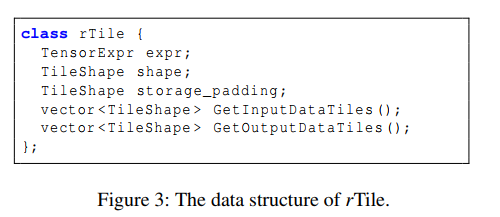
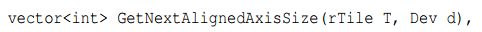
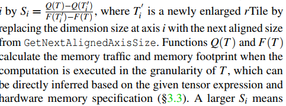
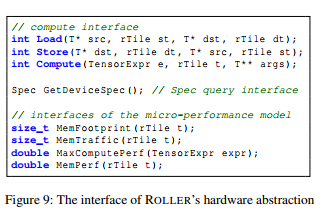

Roller
key: rTile, rProgram
Ch1.Intro:
通用AI编译：buffer+loop+compute —> Roller: tile data pipeline
- 数据块(Tile)在并行执行单元(GPU SM) & 内存层次结构(global/shared memory & register)上的移动和处理。
Note: 高效Kernel —> 提高数据流水线吞吐量目标

- 数据块流水线吞吐量最大化。
Note: tile shape align —> memory bank & memory transaction length & minimum schedulable unit(warp size in GPU)
result: 通过约束tile shape align，每一级内存都有很好的计算效率，同时约束可行tile搜索空间。

- rTile —> rProgram: rTile pipeline性能预测容易实现。

Roller:
<1>.rTile: tile shape(align with hardware) & tensor shape
<2>.rProgram(data processing pipeline): (based on rTile) Load & Store & Compute —> rTile
<3>.scale-up-then-scale-out approach（纵扩 & 横扩）:
scale-up —> 基于rTile递归构造方法，增大tile shape大小，使得单个计算单元达到饱和状态(?)的rProgram(纵扩)；
scale-out —> 基于DNN计算模式 & 加速器并行执行单元同质性，将rProgram复制到其他执行单元（横扩）。
Conclusion:
rTile严格对齐，rProgram性能容易评估 —> 峰值性能 & 带宽（每种算子测试单次即可） + 关键性能指标（memory pressure）直接由硬件得出即可
Ch2.Motivation & Key Observations
- Excessive compilation time: AI编译器耗时长
- Observation and insights: buffer + loop + computation —> data process pipeline(load A & B, then compute C) —> performance(the throughput of load-compute-store pipeline)
key: tile shape & layout in the one-dimension memory space

Ch3.System Design

3.1 Tensor Expression and rTile

rTile封装了：TE + 每个轴的Tile shape + padding inf —> 静态推断出输入、输出shape
note: tile shape(逻辑形式) & storage padding(物理布局) —> 严格对齐底层硬件特征与Tensor Shape
- Alignment with the hardware execution unit:
tile shape 必须与硬件执行单元的并行度对齐（eg. GPU warp size 32*）
- Alignment with memory transaction:
tile shape必须与内存事务长度保存一致，实现最优访存（eg. 行优先Tensor最内层shape是内存事务的倍数）
- Alignment with memory bank: 避免GPU memory bank conflict
$$ padding_size = (BL-N%(BL)+L\lceil{n/L}\rceil)%(BL) $$
- Alignment with tensor shape:
rTile shape应与输入的Tensor对齐，避免边界检查开销（避免较大的padding浪费计算，满足$\frac{S_i-N_i%S_i}{N_i} <= \epsilon$时，进行padding）
- Deriving All rTiles:

- calculating data reuse score:

更大的Si代表相同内存占用获得更大的内存流量。
3.2 Tensor Program Construction
- rTile program: Tensor Expression —> hierarchy rTile data pipeline
每个内存级别定义特定的rTile & 与该级别内存特性保持一致


key: optimizer rProgram —> max pipeline throughput(scale-up-then-scale-out)
<1>the computation and memory movement should fully leverage the hardware features;<2>the computation and memory movement should fully leverage the hardware features;<3>there needs to be sufficient parallelism to leverage all the parallel execution units.
- Scaling up an rProgram

Roller专注构建正确的rTile shape最大化每级内存的吞吐量，依据数据重用分数。
-
Scaling out an rProgram（复制横扩）
-
Small operator and irregular tensor shape
3.3 Efficient Evaluation of an rProgram
key: rProgram性能 —> rTile性能(MemPerf & MaxComputePerf & etc.)
- HAL: Load, Store, Compute, getDeviceSpec, etc.

- Micro performance model:
借助硬件抽象层，Roller可以轻松推导出rTile（和rProgram）的性能
Ch4. Implementation
-
Code generation：原语基于TVM
-
Tensor Padding：<1>apply padding in the upper layer memory(3.1.4);<2>storage padding基于TVM storage align原语(3.1.3)
-
Performance Profiling
a. micro performance profiler(off-line): micro-benchmark生成内存带宽，计算吞吐量等硬件指标
b. kernel profiler(on-line) :profiles the fastest kernels among the top K rPrograms and is used for each compilation result if the K is larger than 1
Conclusion
- kernel计算—> 数据移动data pipeline（rTile效率 —> rProgram效率）(Note: rTile严格对齐)
- 性能评价简单，更多基于硬件特性直接得出，无需复杂代价模型
- schedule扩展：横扩 & 纵扩